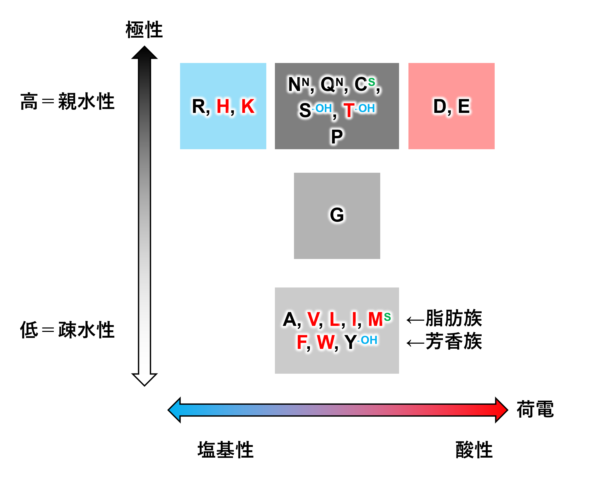

アミノ酸（amino acid）
分子内にアミノ基（-NH2）とカルボキシル基（-COOH）をもつ化合物の総称で、蛋白を構成する要素の一つである。
アミノ基とカルボキシル基が結合する炭素の位置により、α、β、γ、δ、εなどのアミノ酸が存在するが、蛋白を構成するアミノ酸は全てα-アミノ酸*である。また、蛋白を構成するアミノ酸は、グリシンを除き全てL体*である。自然界に存在する約500種類のアミノ酸のうち、蛋白を構成するアミノ酸は20種類である。そのうち、ヒト（や動物）が体内で作ることのできない9種類のアミノ酸を必須アミノ酸、体内で糖質や脂質から作り出すことのできる残りの11種類を非必須アミノ酸と呼ぶ。
*α-アミノ酸とは、カルボキシ基が結合している炭素（α炭素）にアミノ基も結合しているアミノ酸であり、RCH(NH2)COOHという基本構造（Rは側鎖）を持つ（プロリンは例外）。
アミノ酸の特性
アミノ酸の特性として、側鎖の荷電の有無と極性が重要である。荷電があるものは全て極性が高い。つまり、親水性である。荷電のないものは、高極性から低極性まで様々である。したがって、極性の高・中・低、荷電の酸性・中性・塩基性によって、9つの区域に分けられるが、荷電を持つものは全て高極性であるため、実際には5つの区域に分類される。

図1 アミノ酸の特性
極性も荷電も中性のアミノ酸
極性無電荷の側鎖を有するアミノ酸
-
セリン（serine、Ser、S）非必
-OH
-
スレオニン（threonine、Thr、T）必須
-OH
-
アスパラギン（asparagine、Asn、N）非必
-NH2
-
グルタミン（glutamine、Gln、Q）非必
-NH2
-
システイン（cysteine、Cys、C）非必
S
- プロリン（proline、Pro、P）非必
酸性の側鎖を有するアミノ酸
-
アスパラギン酸（aspartic acid、Asp、D）非必
-
グルタミン酸（glutamic acid、Glu、E）非必
塩基性の側鎖を有するアミノ酸
- アルギニン（arginine、Arg、R）非必
-
ヒスチジン（histidine、His、H）必須
- リジン（lysine、Lys、K）必須
脂肪族アミノ酸
- アラニン（Ala、A）非必
- バリン（Val、V）必須
- ロイシン（Leu、L）必須
- イソロイシン（Ile、I）必須
- メチオニン（Met、M）必須